Mara Solen, Matt Oddo, Tamara Munzner
|
constant 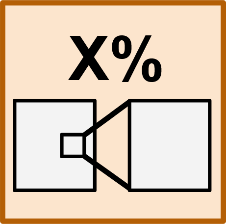 |
||||||||||
|
data driven |
none 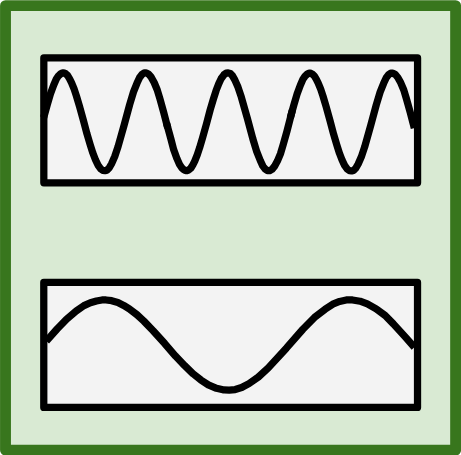 |
single-view pan and zoom |
||||||||
|
total
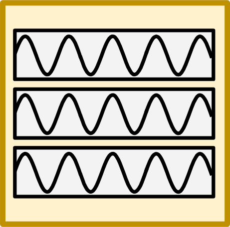
min: |
user continuous 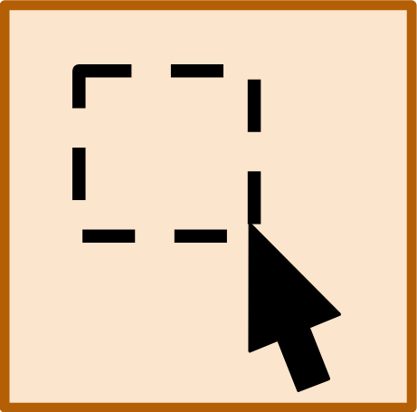 |
marks 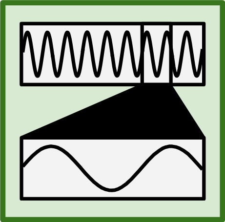 |
none |
simultaneous occluding embed |
||||||
|
simultaneous
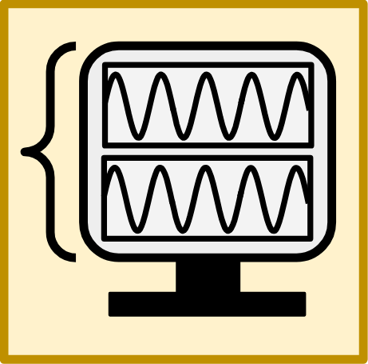
min: |
user discrete 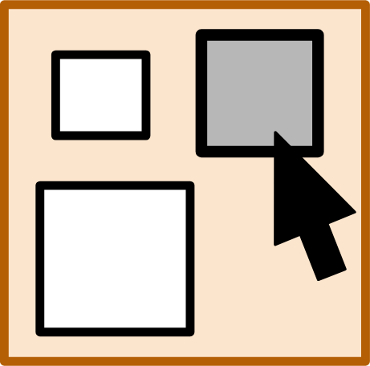 |
different 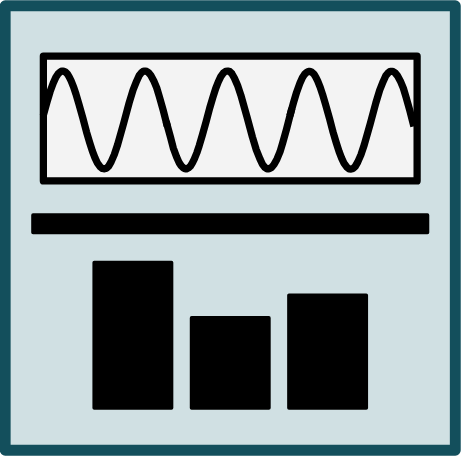 |
channels 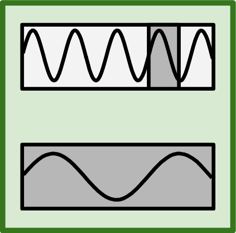 |
zoom 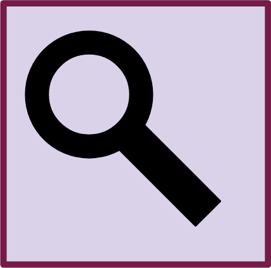 |
physical |
no 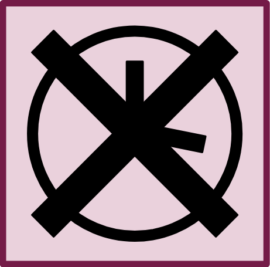 |
no |
simultaneous separate multilevel |
||
|
separate
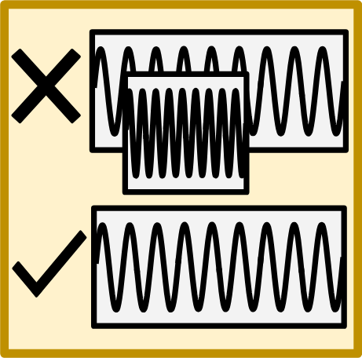
min: |
user mixed 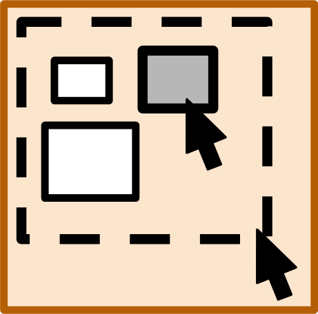 |
same |
both 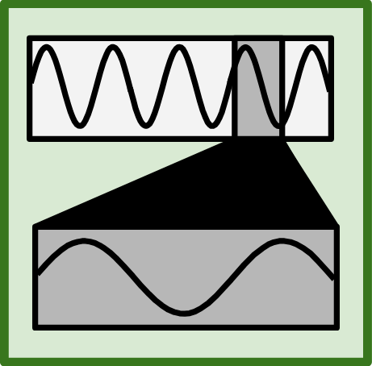 |
zoom/pan 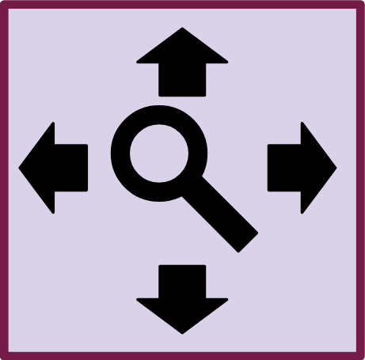 |
digital 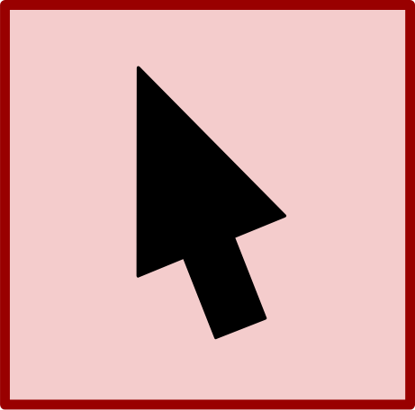 |
yes 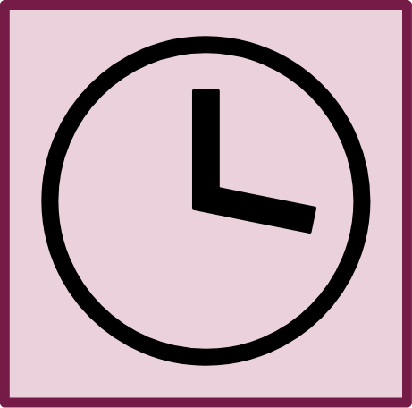 |
yes 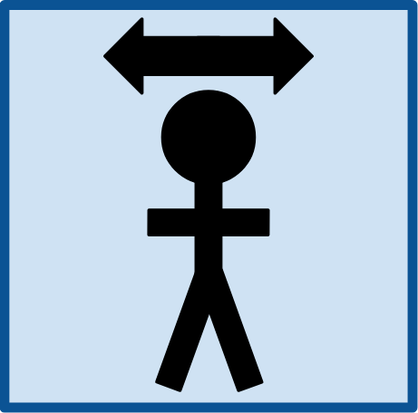 |
familiar zoom |
||
| example | image | scales | navigation | familiarity | strategies | |||||
|---|---|---|---|---|---|---|---|---|---|---|
| count | step size | encodings | association | type | mode | visceral time | concrete | |||